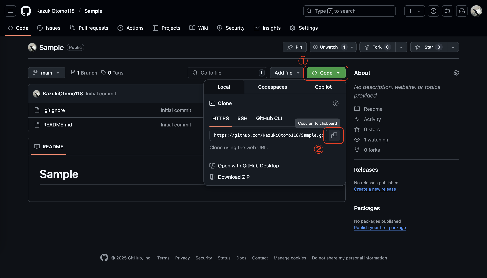
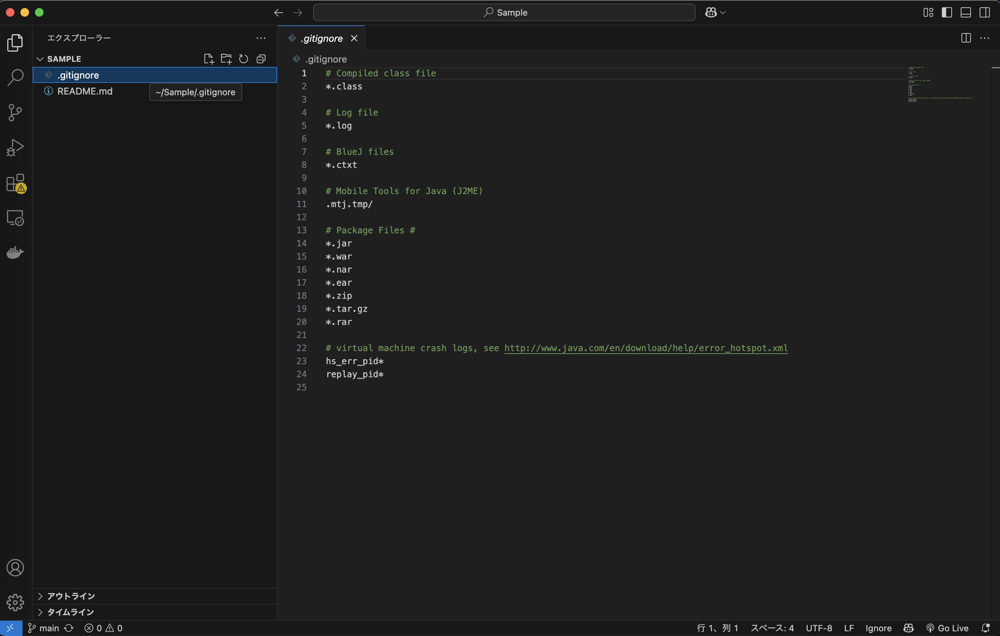

1. レポジトリの URI を取得する
以下画像のボタンから、レポジトリの URI を取得できるのでコピーします。

2. 忘れにくい場所にレポジトリを clone する
以下のコマンドを実行します。
# ※1. レポジトリのURIは、実際に取得したものに置き換えてください。
# ※2. 「$」 は、コマンドプロンプトのプロンプトを表しています。実行する際は、コマンドプロンプトのプロンプトは入力しないでください。
# 「pwd」（自分のいる場所を確認する）、「ls」（ディレクトリ内のファイルを確認する）などのコマンドを使って、cloneする場所を確認してください。
$ git clone <レポジトリのURI>
3. clone したレポジトリを開く
クローンしたものを、VSCode や IntelliJ IDEA などの IDE で開きます。 これで、開発環境の準備は完了です！
